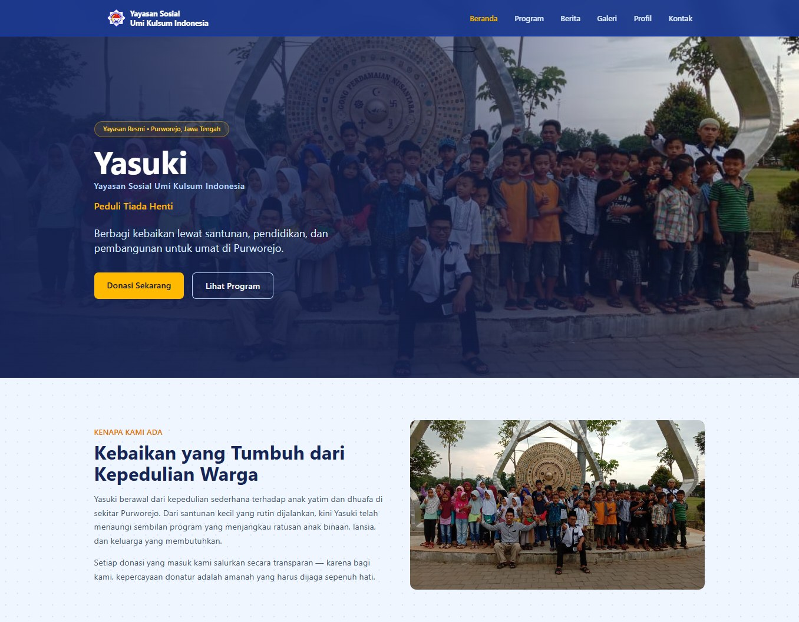
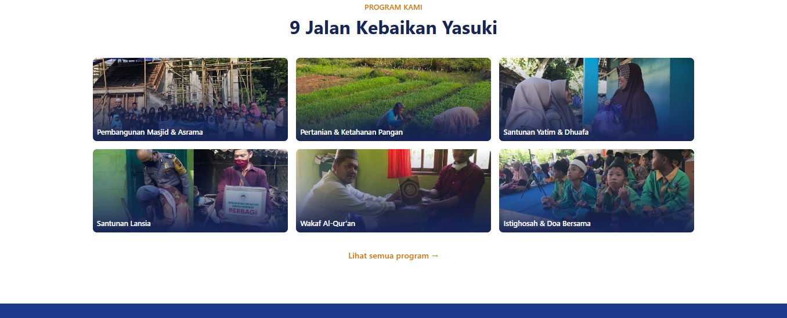
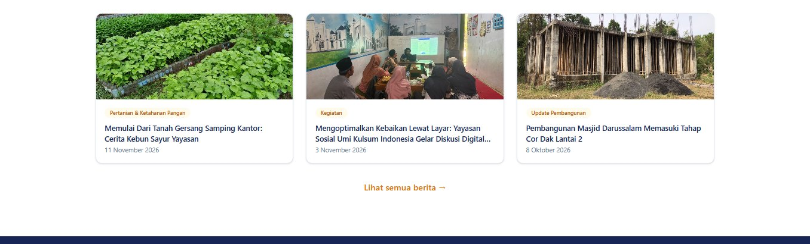
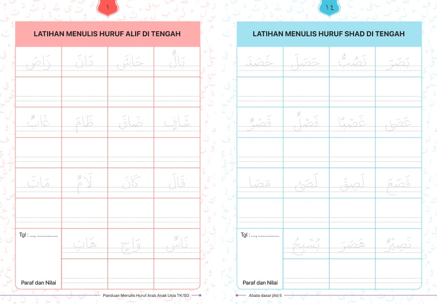
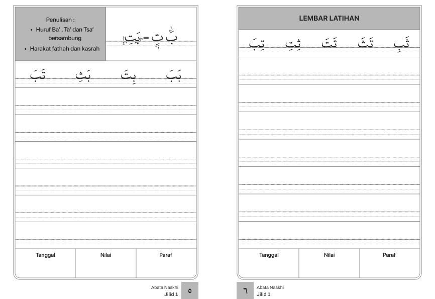
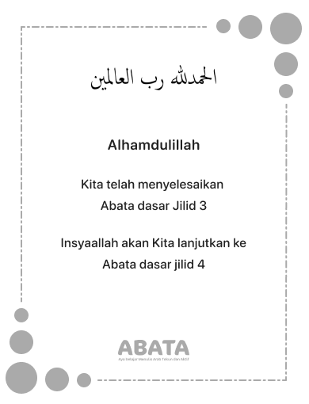

Merancang dan membangun website serta sistem donasi untuk yayasan dan komunitas, dari coretan pertama sampai bermanfaat untuk banyak orang. Berbasis di Purworejo.
Mulai berkarya sejak 2021 lewat desain dan media sosial, lalu pelan-pelan masuk ke web. Sekarang merancang antarmuka sekaligus membangunnya, dibantu AI coding assistant, untuk yayasan dan komunitas yang butuh website dan sistem donasi yang rapi dan mudah dipakai.
2021
tahun mulai berkarya
5
website dan sistem dirilis
3
yayasan dan komunitas
KARYA
Karya yang bisa dilihat langsung.



YASUKI · 2023–SEKARANGWebsite dan donasi YASUKIWebsite yayasan di Purworejo, ditambah landing page donasi Masjid Darussalam yang terhubung ke iklan Meta Ads dan checkout Scalev.
Form donasi lewat QRIS dan transfer bank
Dashboard admin dengan akses per peran untuk verifikasi donasi, berita, dan program
Pencatatan donatur dan transaksi untuk amil dan fundraiser
YACIM · 2026–SEKARANGAplikasi pencatatan donasiAplikasi untuk mencatat donatur, transaksi, dan program yang dipakai amil dan fundraiser YACIM.
Data donatur, transaksi, dan program dalam satu tempat
Akses yang berbeda untuk tiap peran
LaravelMySQL



FREELANCE · 2021–2022Desain isi buku seri Naskhi dan ABATATata letak buku latihan menulis Arab untuk anak (Ayo belajar Menulis Arab Tekun dan Aktif).
FigmaLayout buku
PENGALAMAN
Perjalanan kerja.
2023–sekarang
YASUKI, Tim Kreatif & Digital
Memegang seluruh urusan digital yayasan sejak 2023: dokumentasi, desain grafis, konten media sosial, kalender, skrip video, sampai website, sistem donasi, dan iklan Meta Ads.
2026–sekarang
YACIM, Web Designer & Builder
Merancang dan membangun website profil serta aplikasi pencatatan donasi untuk yayasan di Magelang.
2026–sekarang
Proyek personal, Web Designer & Video Editor
Website profil dua bahasa (ID/EN) untuk klien perorangan (lihat website), serta editing video talking head untuk Reels dan TikTok.
2022–2023
KOMIJADIY, Tim Kreatif & Social Media Specialist
Mengurus konten dan dokumentasi komunitas, lalu menjadi social media specialist untuk pelatihan Akademi Bisnis Indonesia (ABI).
2021–2022
Buku seri Naskhi & ABATA, Layout Designer
Mendesain isi buku latihan menulis Arab untuk anak (Ayo belajar Menulis Arab Tekun dan Aktif).
CARA KERJA
01
Ide
Mendengar dulu: apa yang dibutuhkan dan siapa yang akan memakainya.
02
Desain
Merancang antarmuka dan alur yang sederhana, supaya orang tidak perlu bertanya cara memakainya.
03
Bangun
Membangun website dan sistemnya, dengan bantuan AI coding assistant.
04
Luncurkan
Rilis, pasang iklan atau checkout, lalu dirawat setelah berjalan.
KEAHLIAN
Web
AstroTailwindLaravelCloudflareGit
UI/UX & desain
FigmaAntarmukaLayout buku
Fundraising
Meta AdsScalevLanding page
Konten
Media sosialVideo pendek
PENDIDIKAN
MA Nuurul Waahid, Purworejo
Lulus 2019 · formal
Pesantren Qodr, Bantul
2019–2022 · nonformal, fokus UI/UX Design
SERTIFIKASI & BAHASA
Sertifikat UI/UX Design
Qodr.or.id · 2019–2022
Sertifikasi Digital Fundraiser
Pondok Digital · 1 bulan
Indonesia (native), Inggris (intermediate, B1)
KONTAK
Senang kamu sampai di sini.
Terbuka untuk pekerjaan penuh waktu, proyek freelance, dan kolaborasi.